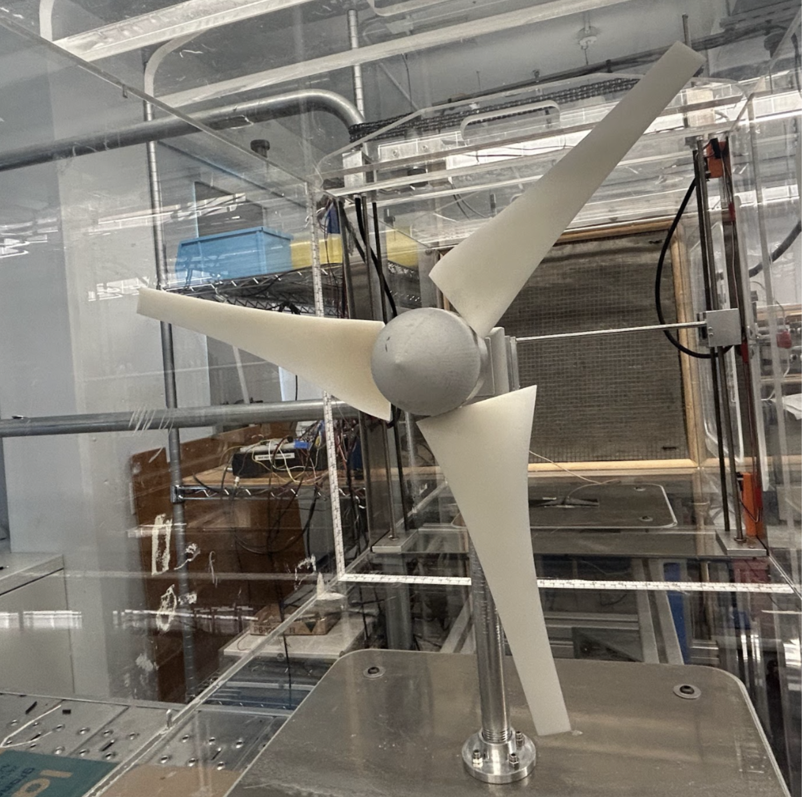
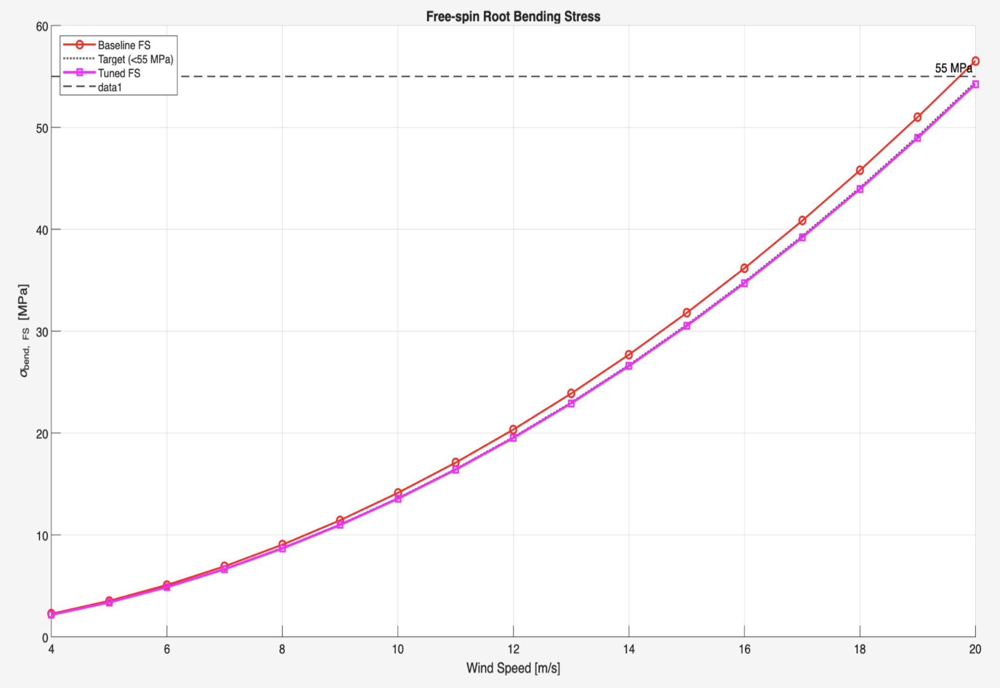
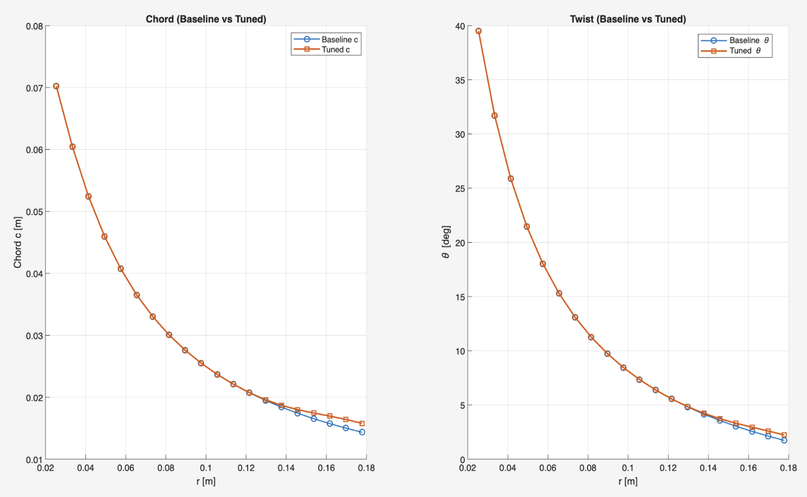
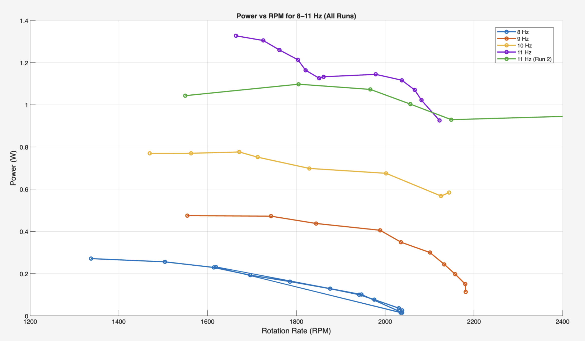
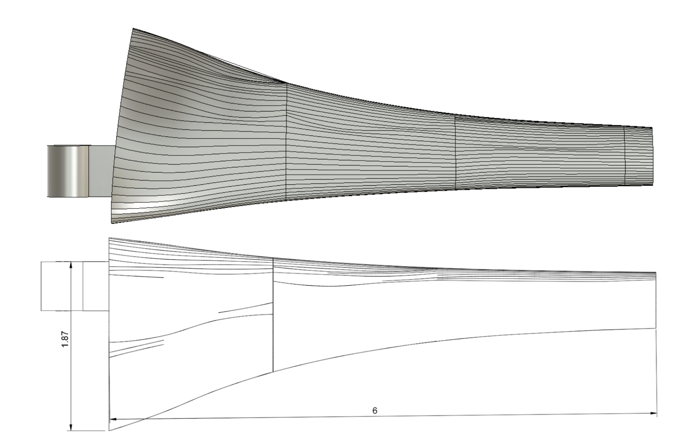
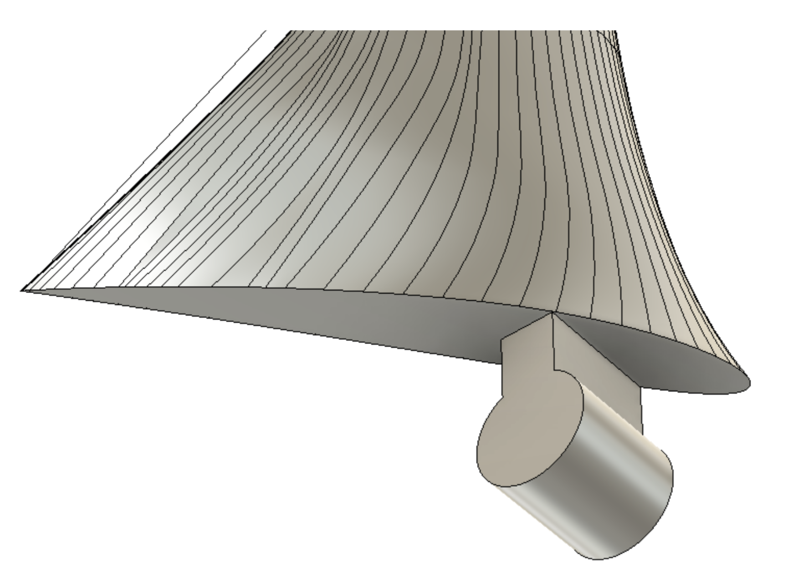

Wind Tunnel Blade Optimization
MATLAB-based turbine blade design considering aerodynamic performance and 3D printing constraints, validated through wind tunnel testing.

Objective
As part of MAE 4272: Fluids and Heat Transfer Laboratory course, my team was tasked with designing a wind turbine blade capable of maximizing power output under fixed wind tunnel operating conditions. We were constrained by a 6-inch blade length, a prescribed hub geometry, and a material flexural strength limit of 55 MPa for Accura PLA. The design also needed to remain structurally stable below the system’s maximum safe rotational speed of ~2000 RPM. Our goal was to optimize aerodynamic performance while ensuring that the blade would not enter unsafe free-spin conditions during operation.
Design Process
We built a MATLAB-based aerodynamic and structural model to iterate on twist distribution, chord taper, and predicted torque. To account for overshoot, we optimized the system to perform ideally at 1500RPM. Using NACA 4412 baseline geometry as a starting point, we computed aerodynamic torque, root bending stress, and free-spin RPM. The model revealed that free-spin stress exceedance was the likely failure mode, so our design iterations focused on reducing root bending moment while improving power generation efficiency. The final tuned design reflected adjustments to twist and taper that balanced aerodynamic loading with structural integrity.


Testing and Performance
We tested the blade across four wind tunnel frequencies (8–11 Hz; corresponds to 4.6-6.3m/s). For each test, we increased the torque brake voltage in increments until the rotor stalled, collecting RPM and electrical power data at each step. The resulting power–RPM curves showed that the blade consistently produced measurable power across all frequencies, achieving a peak of 1.33 W at 1664 RPM at a wind speed of 6.3 m/s. Across all tests, the average maximum power was 0.712 W at approximately 1557 RPM, demonstrating good agreement between design predictions and real-world performance.

Challenges and Insights
At higher tunnel frequencies, the turbine became difficult to stabilize due to sudden accelerations and torque spikes, revealing system-level constraints not fully captured by the MATLAB model. The torque brake exhibited coarse resolution, preventing fine control near the peak operating region, and aerodynamic efficiency at high TSR pushed the rotor toward free-spin conditions. These discrepancies highlighted the importance of modeling real torque brake limits and incorporating losses at the hub and blade tip. If we had more time, we would have liked to refine the MATLAB model to make less assumptions, such as accounting for losses at the tip through vortex shedding. Overall, the blade met the performance objectives, but its real behavior was governed as much by system limitations as by aerodynamic design.
My Contributions
I focused on developing and refining the MATLAB design model, tuning twist and taper parameters to reduce bending stress while preserving aerodynamic efficiency. I also helped plan and run the wind tunnel experiments, performed power-RPM data processing, and contributed to interpreting discrepancies between theoretical and experimental torque predictions.
Figures

